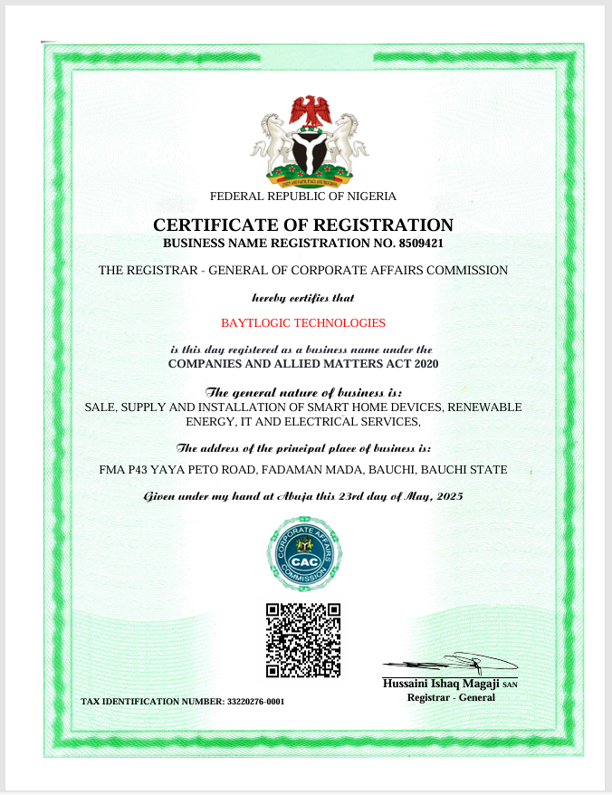
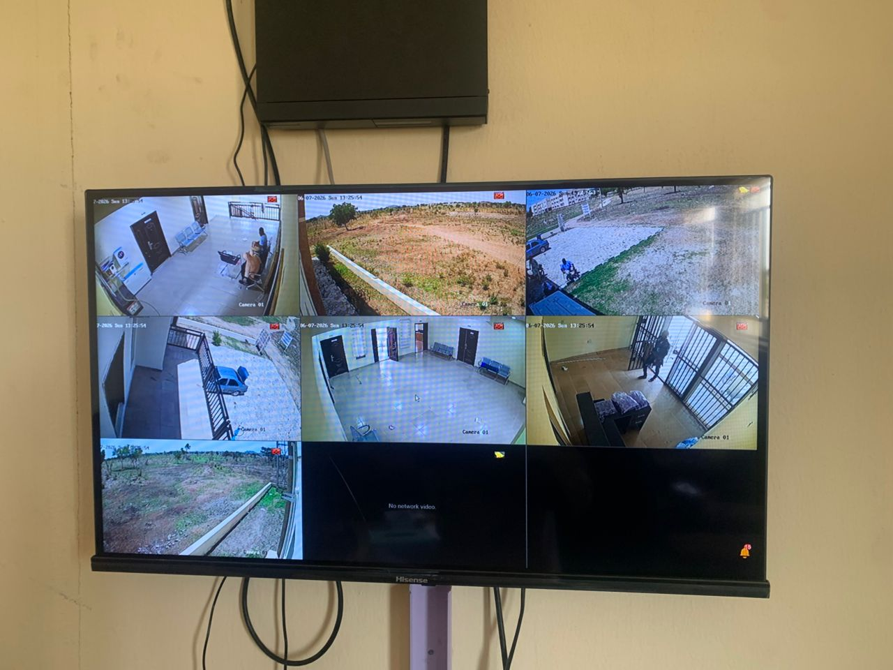
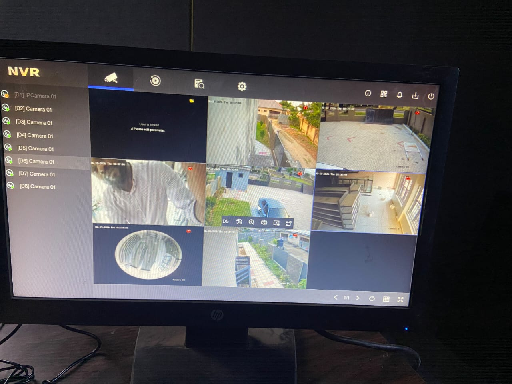
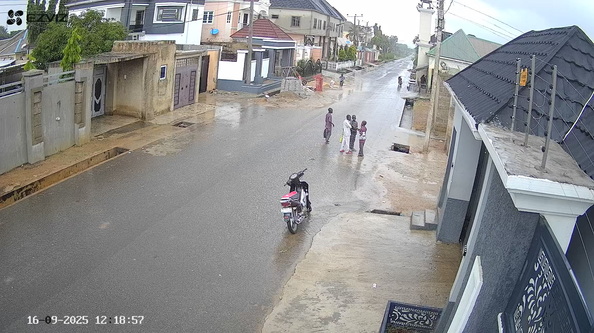
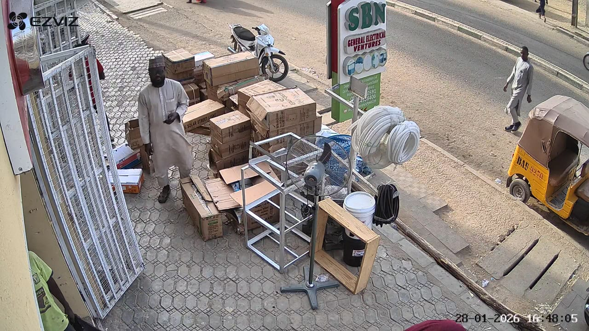
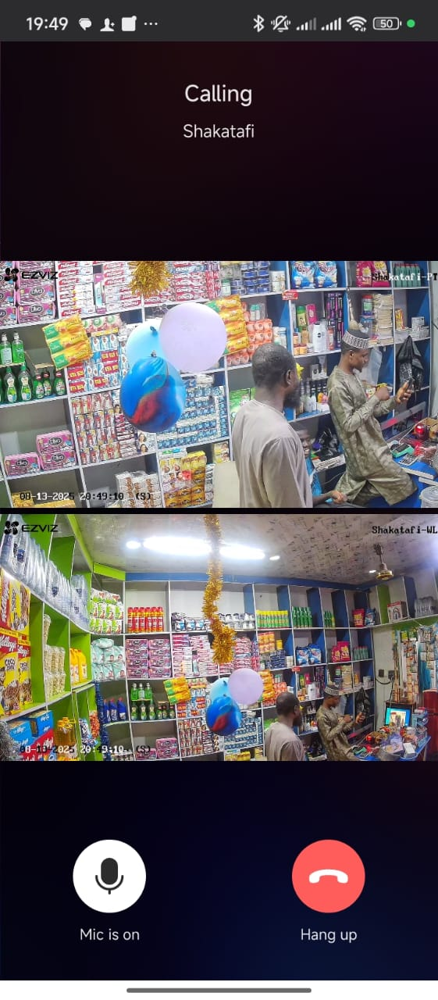
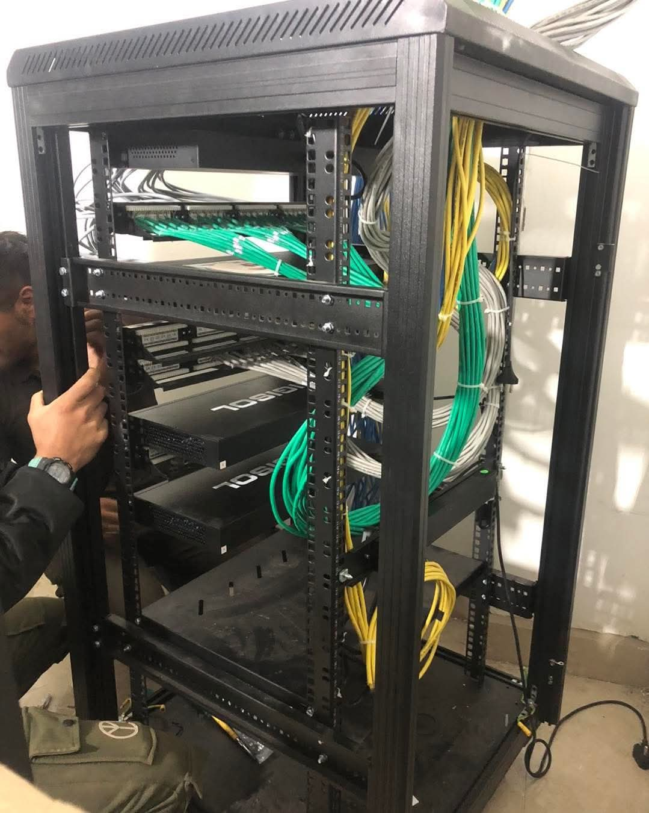
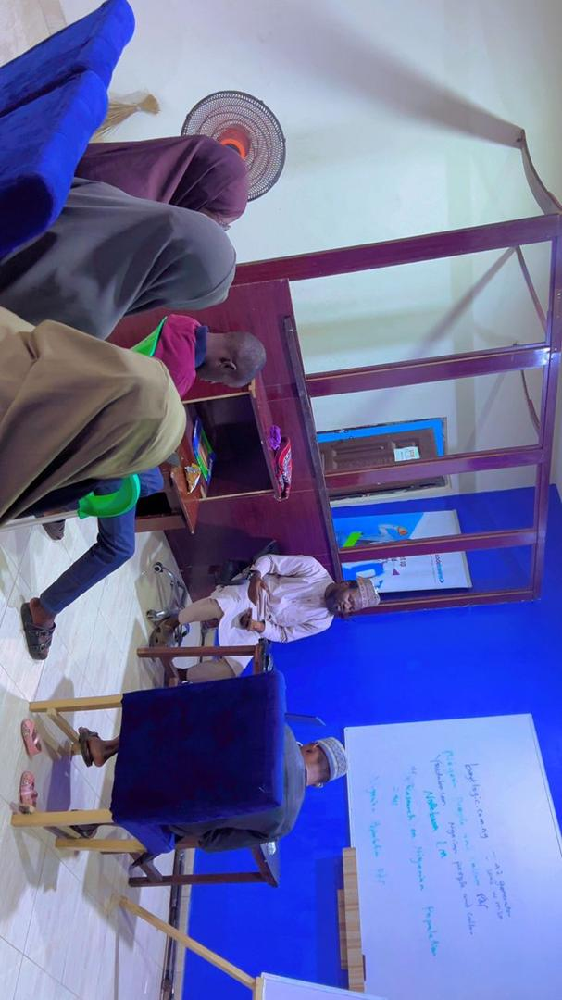
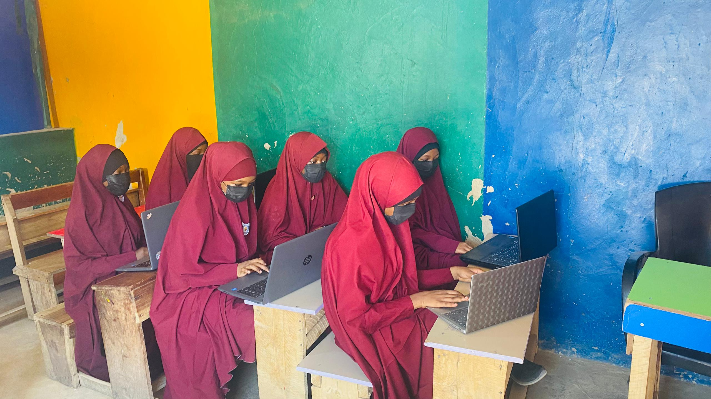
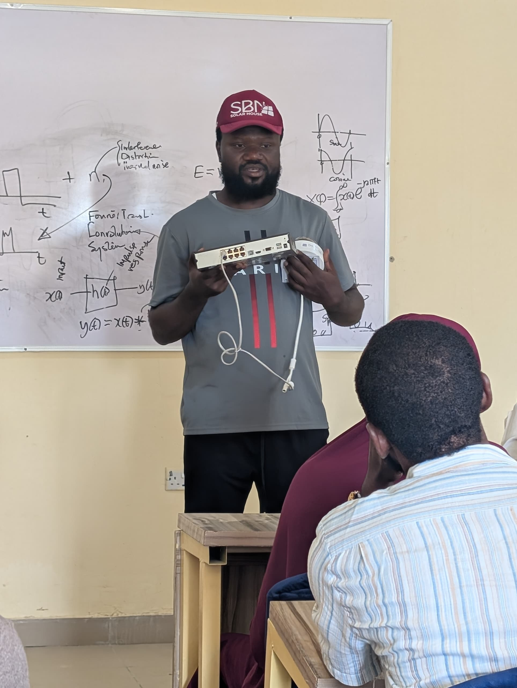

Where Intelligence Meets Security
BaytLogic Technologies is an engineering-led technology company headquartered in Bauchi, Nigeria. We specialize in high-definition IP surveillance, smart home & building automation, embedded AI vision systems, and digital educational infrastructure across Northern Nigeria and nationwide.
Document Ref: BLT-CP-2026-V3
Lead Engineer & Chief Executive Officer (CEO)
"Our mission at BaytLogic Technologies is to deploy world-class engineering solutions while training the next generation of Nigerian youth in practical, job-ready technology skills. From smart surveillance to embedded AI, we bridge the gap between theoretical knowledge and real-world installation capabilities."
IP Surveillance Systems, Edge Computer Vision, Smart Home Automation, and Enterprise LMS Infrastructure.
Pioneered BaytLogic Academy practical bootcamps producing 8 staff hires and graduate-led startups.
BaytLogic Technologies is fully registered and compliant with federal regulatory bodies in Nigeria.

Registered under the Corporate Affairs Commission of the Federal Republic of Nigeria.
Official Tax Identification Number (TIN) and Value Added Tax registration letter from FIRS.
Certified by the Small and Medium Enterprises Development Agency of Nigeria.
Real engineering installations completed for universities, commercial malls, street surveillance, and enterprise facilities.

Full CCTV surveillance and IP monitoring system installed at the Department of Computer & Communications Engineering Laboratory.

Commercial HD CCTV coverage for checkout registers, entry gates, and outdoor parking protection.

High-visibility street surveillance setup providing continuous neighborhood monitoring and public safety.

Weatherproof pole-mounted IP cameras configured for remote viewing and perimeter motion detection.

Integrated smart video intercom and door entry control deployed with mobile app remote unlocking.

Structured Cat6 cabling, PoE switch patching, server rack organization, and network cabinet installation.
Training youth, university graduates, and Master's students in practical robotics, AI, and smart security installations.


